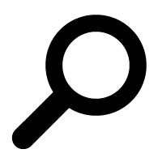
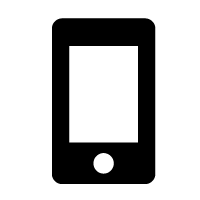
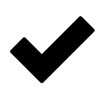

Nomad Device Lab is a collection of mobile devices that helps you do better mobile testing.
Use of the lab is free, but space is limited.
It's Cape Town’s answer to Clearleft’s Test Lab; a community device lab, organised by Steve Barnett of Naga. Read about what this device lab is about, or see what others are doing around the world at Open Device Lab.com
The Web and where it’s going
-
Internet access across the world is increasing at a rapid pace. The change is especially noticeable with mobile devices. Many people have no fixed-line access to the web, instead relying on their mobile device. Web sites and web apps are being used across a wider range of software and hardware than ever before.
-
In order to provide the best product to users and clients, it’s necessary to test across a wide range of platforms: mobile is the most exciting and the most challenging of these.
-
Mobile Operating System and browser emulators offer a reasonable way of testing layout, but can suffer from errors or differences in performance and behaviour. The best way of testing is to get hands-on and use the site as your users will: on actual devices.
Nomad Device Lab
Nomad Device Lab is a travelling, curated, collection of mobile devices that helps you to do practical and efficient testing.
-
A travelling lab.
The lab is open to the community at locations around Cape Town. Use of the lab is free, but space is limited, so please contact the lab or the host for that day.
If you would like to host the lab for a day or half day session, we'd love to hear from you.
-
 A curated collection.
The devices in the lab are selected to match market growth and penetration, with a slant towards South African trends. The selection is based on research and statistics and is regularly, but not frequently, updated. This means that testing on the devices in the lab covers a broad range of your users.
-
 Mobile devices.
Portable, internet-enabled, devices: not traditional desktop computers. The lab contains feature phones, smartphones, tablets, and will contain whatever comes next.
-
 A practical and efficient means of testing.
The curated collection means that the number of devices is kept small enough that testing can be done across the full range in a short period of time. The community aspect of the lab means that other developers will be around to share knowledge and information about the various platforms.